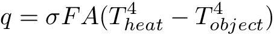
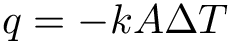
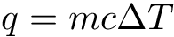

Physically Based Heating of Metals
Sean Houlihan, Kyle Kovach, and Rishi Upadhyay
Abstract
The goal of our project was to simulate the spreading of heat through a metal block as parts of it are exposed to high temperatures in real time. We emulate this by implementing real, physical heat transfer equations in our code, which allow for each static particle to transfer its heat to neighboring particles, resulting in a change in temperature. This change in temperature was represented by the changing color of the material, transitioning from the default grey, to red, to orange, to yellow, and finally to white: the same color gamut a real metal goes through as it heats up. Since the appearance of our simulation mimics that of a real heated metal, and does so in real time, it could be used in real-time applications like video games, virtual reality, or augmented reality.
Technical Approach
At a high-level, our technical approach to this problem was to simulate the heating with a particle-based simulation. All of our code was implemented using OpenGL and C++. OpenGL was used mainly for creating a GUI window, and for the low-level implementation details such as passing vertices and colors to the shaders which then drew our images. C++ was used to create and maintain all the virtual particles. While starting this project, we were unable to find any previous work in this area and therefore all the implementation decisions were made from scratch ourselves. One of the main goals of our project was for our implementation to run in real-time, and therefore we chose to make all our particles are static. This does reduce the accuracy of our simulation slightly, but we chose to make this trade-off in order to avoid the extra calculations that would slow down our simulation too much.
In order to implement the particle-based simulation, we first import a mesh .obj from Blender into OpenGL. We then go through the vertices of the mesh and create a large number of virtual particles, all spaced-evenly apart, based on the mesh geometry. When the particles are first created, they are initialized at a preset temperature. After this 3D grid of particles has been created, we map every vertex to its nearby particles. In order to do this, per vertex, we iterate through all particles and find the closest one. After we have found the distance to the closest particle, we iterate through all the particles again, this time looking for any particle within 3% of the distance to the closest particle. Therefore, any particle that is between 0.97x and 1.03x the closest distance is now mapped to that vertex. After all the vertices have been associated with nearby particles, we can move onto the simulation portion.
In order to fully simulate heating, we had to implement two types of heat transfer: radiation and conduction. The first type, radiation, was used to heat the mesh from an external heat source. The equation used to model this is as follows:
Here q is the amount of energy transferred, is the Stefan-Boltzmann constant which is equal to 5.67 x 10-8, F is the percentage of the area that is visible from the heat source, A is the surface area of the object, and Theat and Tobject are the temperatures of the heat source and object respectively. Using this equation, we were able to model the black-body radiation and “add” energy to our system. This equation allowed us to heat up a portion of the mesh and increase the energy of the object.
The next type of the heat transfer we implemented was conduction, or the heat transfer through the object. In order to do that, we used the following equation:
In this equation, q is the amount of energy transferred, k is the thermal conductivity of the metal we are modeling, and Tis the difference in temperature between the particles in question. Using this equation, we can model the heat transfer between particles, and the spread of heat within the object.
Finally, the last equation implemented was:
This equation is used to calculate how much a particles temperature changes based on how much energy it gains or loses. The qis the energy gained or lost, m is the mass of the particle, c is the specific heat of the metal we are modeling, and Tis the change in temperature.
With all three of these equations, we can fully model the heating of a metal. The radiation equation allows us to “add” energy to the object from an external source, the conduction equations allows us to spread this energy throughout the object, and the specific heat formula allows us to calculate how the temperature of the particles change based on the energy they gain or lose. In order to “add” energy, we chose a section of the object that we wanted to heat up and applied the radiation equation appropriately. We then simulated heat transfer by iterating through every particle and using the conduction equation on all its neighbors once per timestep. Finally, we used the specific heat equation on each particle to calculate its current temperature.
The final step to the simulation was to color the vertices of the mesh appropriately based on the temperature of its nearby particles. In order to do this, first each virtual particle is assigned a color based on its current temperature. Since metals have different colors at various temperatures, we used a mapping from temperature to color to find the appropriate color and then added linear interpolation with nearby colors to create a smooth look. This color is based on how metals change color in real life as they heat up. After the particles have been assigned a color, we use the mapping created earlier between particles and vertices to compute the color of all vertices.
This is done using a weighted average based on the inverse of the particles distance from the vertex. In this way, closer particles are weighted more while further particles get less emphasis. The colors for all vertices were then passed to OpenGL as a buffer for the shaders to render.
Many of the issues we ran into throughout this project were a result of running operations on thousands and thousands of virtual particles. While working on the coloration of particles, we often ended up seeing colors that were nowhere in our code. In addition, we ran into various small bugs in our heat transfer equations that would result in the simulation running fine except for a few edge cases. The greatest challenge of these bugs was that because we had 50,000+ particles in some meshes, we could not use print statements to debug easily. As a result, we were forced to think about our implementation and consider what kind of bugs could result in the issues we were seeing. Visual debugging in this sense also helped us think about our implementation details and find other potential issues. Finally, an interesting issue we ran into was that early simulations would often be non-deterministic for no reason our group could pinpoint. This bug took us quite a while to figure out, as it was due to the dynamic memory management of our program, something our group was not very familiar with prior to this project.
Overall, this project was a great learning experience for our group. We were able to learn a new framework (OpenGL), how to implement a static particle-based simulation, and a lot of new visual debugging skills. In particular, we learned how to set up a new OpenGL project from scratch and how to interact with it programmatically to create a realistic, physically based simulation.
Results


Contributions From Each Team Member
Sean Houlihan: Figured out how to format and import .obj files from Blender into OpenGL, implemented the dynamic creation of static particles based on the .obj file, ironed out bugs in the mapping of vertices to particles, figured out how to populate position and color buffer data in OpenGL, and played a key role in discovering fixes for some of our most stubborn dynamic memory issues.
Kyle Kovach: Implemented mapping from vertex to nearest particles. Empirically figured out best (most visually pleasing) threshold percent to use. Implemented the distance-based interpolation of the particles’ colors for a given vertex.
Rishi Upadhyay: Created the particle struct, implemented the radiation and conduction heat transfer equations along with the specific heat formula, figured out how to heat a specific portion of the object, implemented the code to find nearby particles and calculate the heat transfer between them, and figured out how to convert the temperature of particles to a color.